最好的建模平台

入门教程
1 新建模型
1.1 功能描述
通过点击新建和添加按钮可以实现新模型的创建。
1.2 用户界面
Ø “新建模型”页面
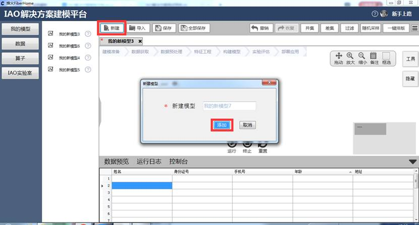
2 取消新建
2.1 功能描述
通过点击取消按钮可以取消新建模型。
2.2 用户界面
Ø “取消新建”页面
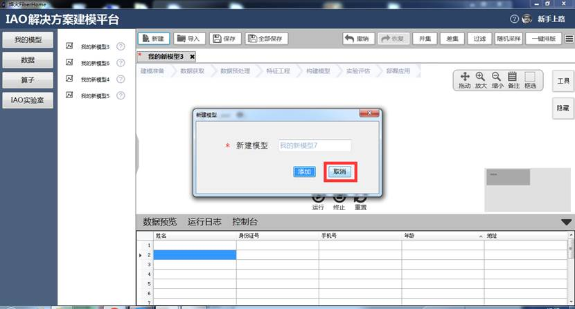
3 保存模型
3.1 功能描述
点击保存按钮可以将新建或更改后的模型保存。
3.2 用户界面
Ø “保存模型”页面
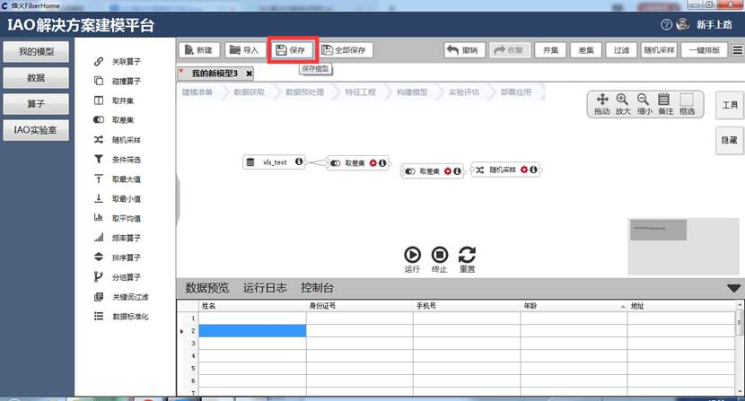
4 保存所有模型
4.1 功能描述
当用户修改或者新建多个模型时，可以通过点击全部保存按钮一键保存多个模型。
4.2 用户界面
Ø “保存所有模型”页面
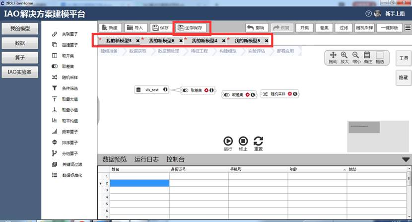
5 关闭模型
5.1 功能描述
“关闭模型”，选中需要关闭的模型为当前展示页面，点击待关闭模型右上角关闭。
5.2 用户界面
Ø “关闭模型”页面
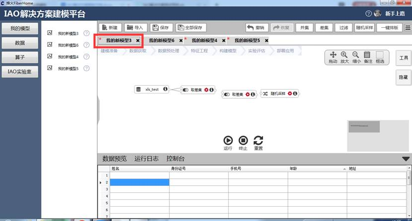
6 左侧面板（右键菜单打开和删除模型、模型浮动信息提示）
6.1 功能描述
在我的模型功能模块下，将鼠标放置在待打开或删除的模型下，可以完成模型的删除和打开。在模型处于打开状态下不可以删除或者再次打开。
6.2 用户界面
Ø “左侧面板右键打开和删除模型”页面
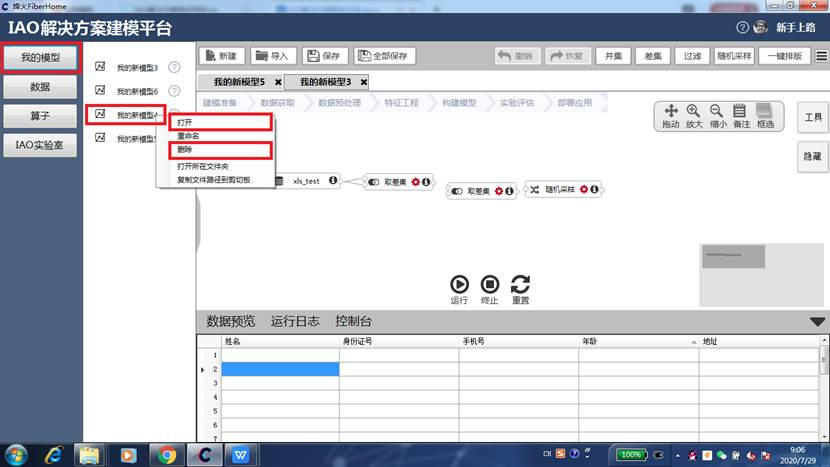
7 模型添加算子
7.1 功能描述
在算子模块下，将鼠标放置在待添加的算子下，将待添加的算子拖拽到模型的空白区域，即可完成算子的添加。
7.2 用户界面
Ø “模型添加算子”页面
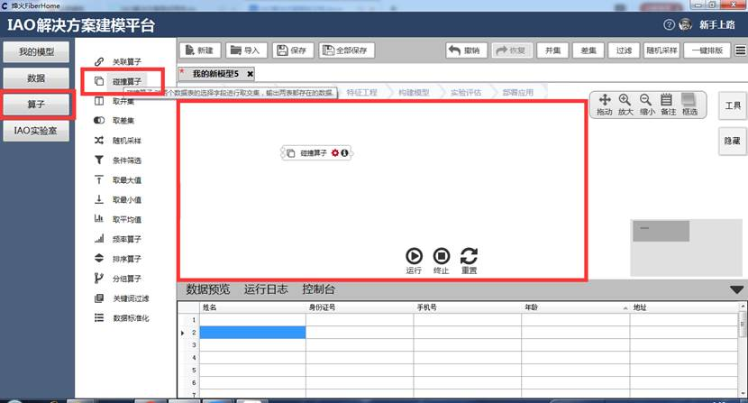
8 模型添加数据源
8.1 功能描述
在数据模块下，点击“导入”按钮，用户可通过选择浏览文件的方式，将选择文件以指定的文件编码或者分割符号将外部数据源导入到本地数据。
8.2 用户界面
Ø “模型添加数据源”页面
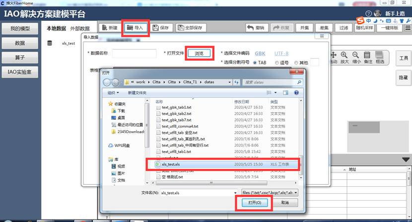
9 模型添加关系
9.1 功能描述
在面板上放置需要运算的指定数据源和算子，将数据源右节点以拖拽画线的方式和指定算子左节点连接就完成了模型关系的添加。
9.2 用户界面
Ø “模型添加关系”界面
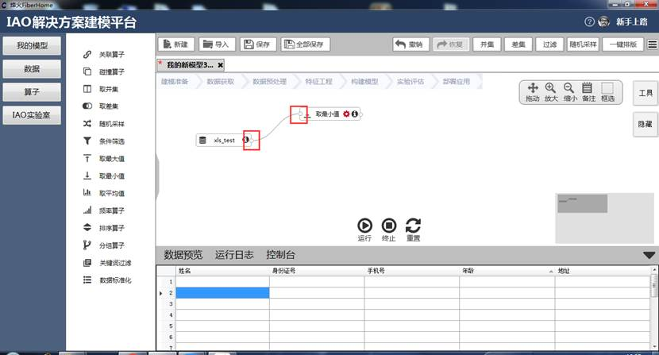
10 上下文菜单
10.1 数据源右键上下文菜单
右键点击数据源元素，弹出上下文菜单，包括“预览”、“设置”、“重命名”、“运行到此”、“异常日志”、“删除”、“打开所在文件夹”、“复制文件路径到剪切板“等选项。其中“设置”、“运行到此”、“异常日志”为不可选状态。
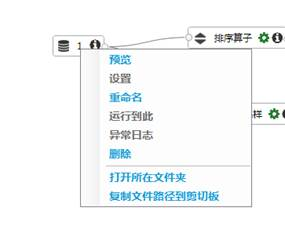
Ø 上下文菜单-预览
右键数据源元素，弹出菜单栏，点击"预览"，底部信息面板展示数据信息。
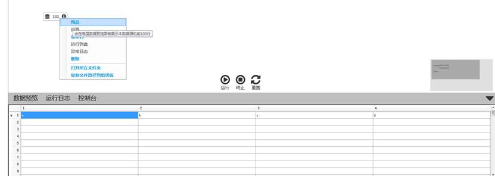
Ø 上下文菜单-重命名
右键数据源元素，弹出菜单栏，点击"重命名"，数据源元素名称聚焦，文字部分可以输入或修改。
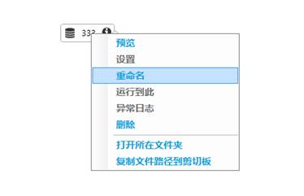 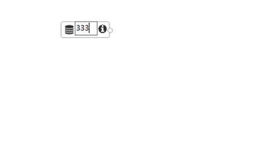
Ø 上下文菜单-删除
右键数据源元素，弹出菜单栏，点击"删除"，数据源元素从画布中移除。
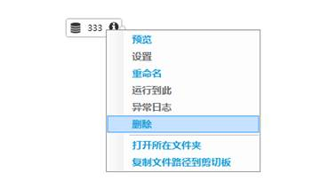
Ø 上下文菜单-打开所在文件夹
右键数据源元素，弹出菜单栏，点击"打开所在文件夹"。数据源元素文件存在时，弹窗打开文件所在文件夹；文件不存在时，弹窗打开其他文件夹。
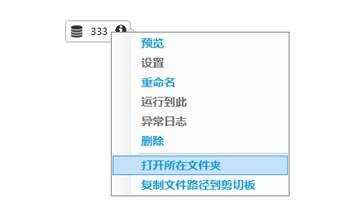
Ø 上下文菜单-复制文件路径到剪切板
右键数据源元素，弹出菜单栏，点击"复制文件路径到剪切板"。数据源路径复制到剪切板。
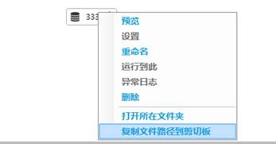
10.2 算子右键上下文菜单
右键点击算子元素，弹出上下文菜单，包括“设置”、“重命名”、“备注”、“运行到此”、“异常日志”、“删除”等选项。其中“备注”、“异常日志”为不可选状态。“设置”在算子未连接数据源时不可选，连接数据源后变为可选状态。
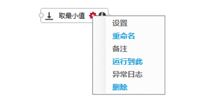 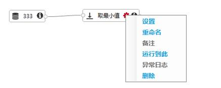
Ø 上下文菜单-设置
右键算子元素，弹出菜单栏。算子元素未连接数据源时，"设置"为灰色不可点击状态；算子已连接数据源时，点击"设置"弹出对应算子配置窗口。
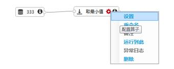 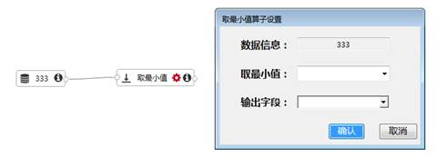
Ø 上下文菜单-重命名
右键算子元素，弹出菜单栏，点击"重命名"，算子元素名称聚焦，文字部分可以输入或修改
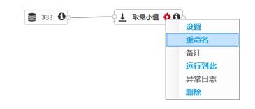 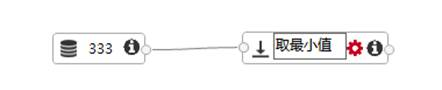
Ø 上下文菜单-运行到此
右键算子元素，弹出菜单栏，点击"运行到此"。算子元素未连接数据源时，或已连接数据源但未配置时，点击"运行到此"弹窗提示，无法成功运行；算子已连接数据源并完成配置时，点击"运行到此"，仅运行该算子及其前置分支上的算子。
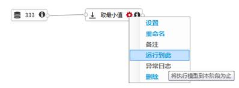
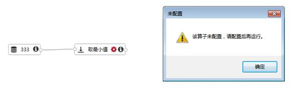
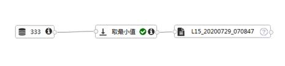
Ø 上下文菜单-删除
右键算子元素，弹出菜单栏，点击"删除"。当无对应结果元素时，算子元素从画布中移除；当有对应结果元素时，算子元素及其连接的结果元素同时从画布中移除。
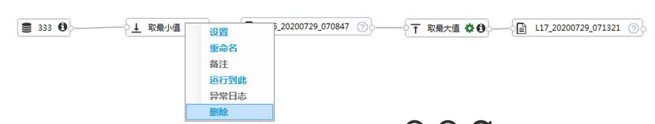
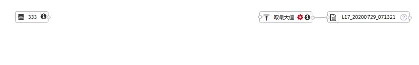
10.3 结果右键上下文菜单
右键点击算子元素，弹出上下文菜单，包括“预览”、“重命名”、“另存为”、“运行到此”、“异常日志”、“打开所在文件夹”、“复制文件路径到剪切板”等选项。其中“异常日志”为不可选状态。
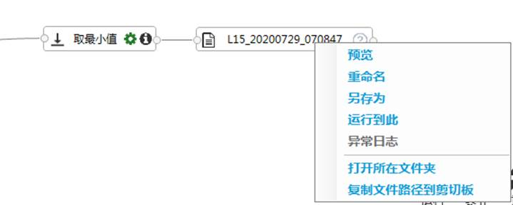
Ø 上下文菜单-预览
右键结果元素，弹出菜单栏，点击"预览"，底部信息面板展示结果信息。
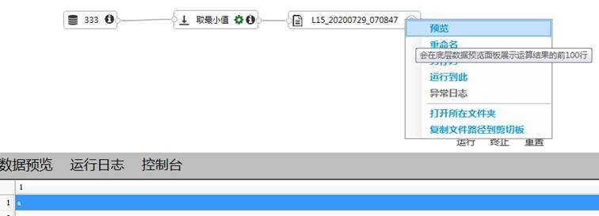
Ø 上下文菜单-重命名
右键结果元素，弹出菜单栏，点击"重命名"，结果元素名称聚焦，文字部分可以输入或修改。
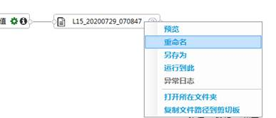 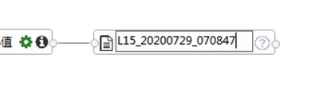
Ø 上下文菜单-另存为
右键结果元素，弹出菜单栏，点击"另存为"，弹窗选择保存路径。
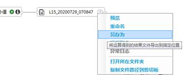
Ø 上下文菜单-运行到此
右键结果元素，弹出菜单栏，点击"运行到此"。算子元素未连接数据源时，或已连接数据源但未配置时，点击"运行到此"弹窗提示，无法成功运行；算子已连接数据源并完成配置时，点击"运行到此"，仅运行该算子及其前置分支上的算子。
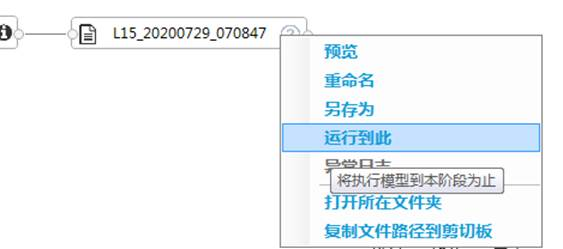
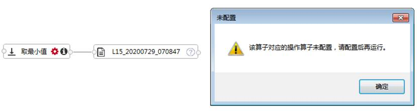
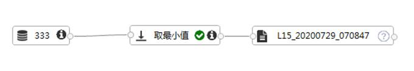
Ø 上下文菜单-打开所在文件夹
右键结果元素，弹出菜单栏，点击"打开所在文件夹"。数据源元素文件存在时，弹窗打开文件所在文件夹；文件不存在时，弹窗打开用户文件夹。
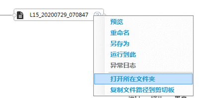 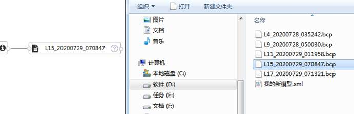
Ø 上下文菜单-复制文件路径到剪切板
右键结果元素，弹出菜单栏，点击"复制文件路径到剪切板"，结果文件路径复制到剪切板。
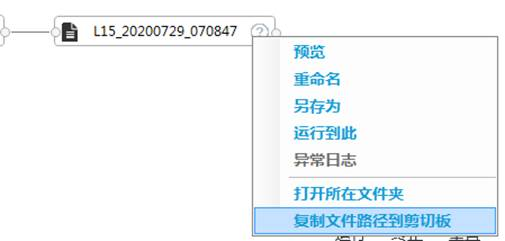
11 模型元素操作
11.1 元素重命名
双击元素名称或右键上下文菜单点击“重命名”，可对当前元素进行重命名操作。元素名称聚焦，文字部分可以输入或修改。
控件长度随名称长度变化，一定长度后超出控件长度的文字以"…"表示，置于文字上方会出现完整内容。若删除名称内容，失焦后恢复成修改前的名称。
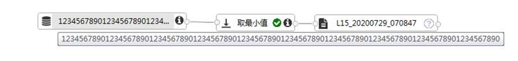
11.2 元素移动
左键长按拖动控件，在窗口中随意拖动控件，松开后控件停留在鼠标松开位置或画布边缘。
11.3 元素删除
模型元素中，只能删除数据源和算子，结果文件无法直接删除。当无对应结果元素时，算子元素从画布中移除；当有对应结果元素时，算子元素及其连接的结果元素同时从画布中移除。
12 模型关系操作
12.1 关系选择
左键数据源与算子的连线关系，未选中的连线加粗，并将其他已选中的连线恢复。左键算子与结果的连线关系，弹窗提示不能选中该关系。
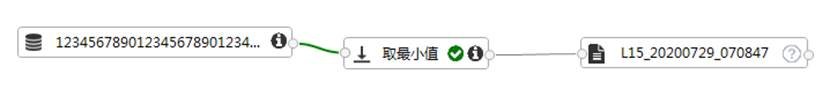
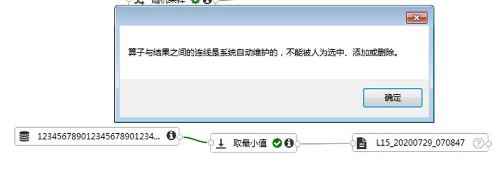
12.2 关系删除
对于已选中的连线，“del”键或者右键弹出菜单点击"删除"后连线删除。对于未选中的连线关系，无法直接删除。
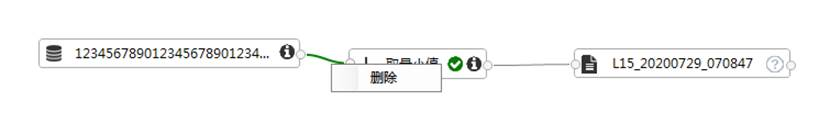